SYNCore RAM Compiler
The SYNCore RAM Compiler generates Verilog code for your specific RAM implementation requirements. The following topics are described here:
Specifying RAMs with SYNCore
The SYNCore IP wizard helps you generate Verilog code for your RAM implementation requirements.
The following procedure shows you how to generate Verilog code for a RAM you specify, using the SYNCore IP wizard.
- Start the wizard.
- From the Synplicity synthesis tool GUI, select Run->Launch SYNCore or click the Launch SYNCore icon to start the SYNCore IP wizard.
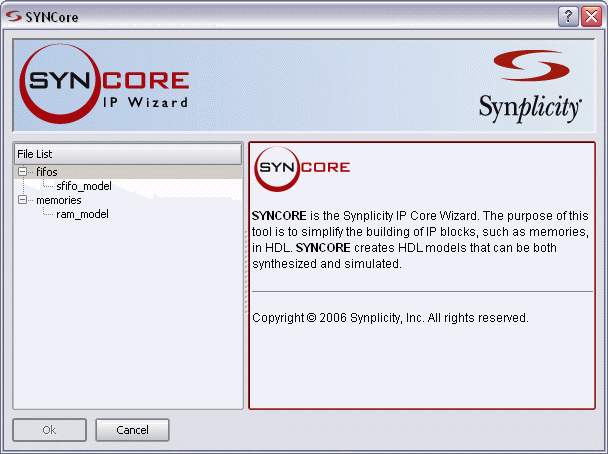
- In the window that opens, select ram_model and click Ok. This opens the first screen of the wizard.
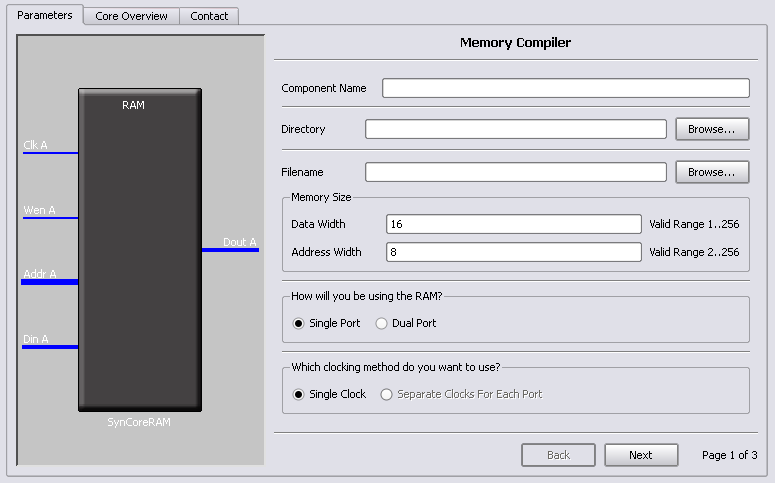
- Specify the parameters you need in the wizard.
- For details about the parameters for a single-port RAM, see Specifying Parameters for Single-Port RAM.
- For details about the parameters for a dual-port RAM, see Specifying Parameters for Dual-Port RAM. Note that dual-port implementations are only supported for some technologies.
The RAM symbol on the left reflects the parameters you set.
The default settings for the tool implement a block RAM with synchronous resets, and where all edges (clock, enable, and reset) are considered positive.
- After you have specified all the parameters you need, click the Generate button in the lower left corner.
The tool displays a confirmation message is displayed (TCL execution successful!) and writes the required files to the directory you specified in the parameters. The HDL code is in Verilog.
SYNCore also generates a testbench for the RAM. The testbench covers a limited set of vectors.
You can now close the SYNCore Memory Compiler.
- Edit the RAM files if necessary.
- The default RAM has a no_rw_check attribute enabled. If you do not want this, edit
syncore_ram.v and comment out the `define SYN_MULTI_PORT_RAM statement, or use `undef SYN_MULTI_PORT_RAM.
- If you want to use the synchronous RAMs available in the target technology, make sure to register either the read address or the outputs.
- Add the RAM you generated to your design.
- Use the Add File command to add the Verilog design file that was generated and the syncore_ram.v file to your project. These files are in the directory for output files that you specified on page 1 of the wizard.
- Use a text editor to open the instantiation_file.vin template file, which is located in the same directory. Copy the lines that define the memory, and paste them into your top-level module. The following figure shows a template file (in red text) inserted into a top-level module.
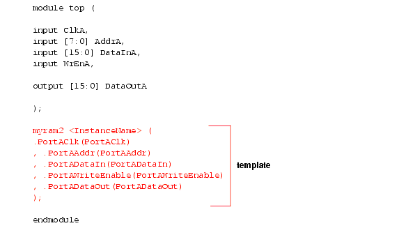
- Edit the template port connections so that they agree with the port definitions in the top-level module as shown in the example below. You can also assign a unique name to each instantiation.
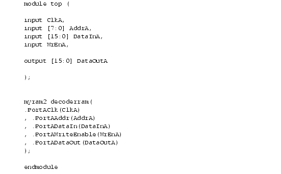
Specifying Parameters for Single-Port RAM
To create a single-port RAM with the SYNCore Memory Compiler, you need to specify a single read/write address (single port) and a single clock. You only need to configure Port A. The following procedure lists what you need to specify. For descriptions of each parameter, refer to SYNCore RAM Wizard.
- Start the SYNCore RAM wizard, as described in Specifying RAMs with SYNCore.
- Do the following on page 1 of the RAM wizard:
- Do the following on page 2 of the RAM wizard:
- Set Use Write Enable to the setting you want.
- Set Register Read Address to the setting you want.
- Set Synchronous Reset to the setting you want. Register Outputs is always enabled
- Specify the read access you require for the RAM.
You can now generate the RAM by clicking Generate, as described in Specifying RAMs with SYNCore. You do not need to specify any parameters on page 3, as this is a single-port RAM and you do not need to specify Port B. All output files are in the directory you specified on the first page of the wizard.
For details about setting dual-port RAM parameters, see Specifying Parameters for Dual-Port RAM. For read/write timing diagrams, see Read/Write Timing Sequences.
Specifying Parameters for Dual-Port RAM
The following procedure shows you how to set parameters for dual-port memory in the SYNCore wizard. Dual-port RAMs are only supported for some technologies. For information about generating single-port RAMs, see Specifying Parameters for Single-Port RAM. It shows you how to generate these common RAM configurations:
- One read access and one write access
- Two read accesses and one write access
- Two read accesses and two write accesses
For the corresponding read/write timing diagrams, see Read/Write Timing Sequences.
- Start the SYNCore RAM wizard, as described in Specifying RAMs with SYNCore.
- Do the following on page 1 of the RAM wizard:
- In Component Name, specify a name for the memory. Do not use spaces.
- In Directory, specify a directory where you want the output files to be written. Do not use spaces.
- In Filename, specify a name for the Verilog file that will be generated with the RAM specifications. Do not use spaces.
- Enter data and address widths.
- Enable Dual Port, to specify that you want to generate a dual-port RAM.
- Specify the clocks.
|
For a single clock...
|
Enable Single Clock.
|
|
For separate clocks for each of the ports...
|
Enable Separate Clocks For Each Port.
|
- Click Next. The wizard opens another page where you can set parameters for Port A.
- Do the following on page 2 of the RAM wizard to specify settings for Port A:
- Set parameters according to the kind of memory you want to generate:
|
One read & one write
|
Enable Read Only Access.
|
|
Two reads & one write
|
Enable Read and Write Access.
Specify a setting for Use Write Enable.
|
|
Two reads & two writes
|
Enable Read and Write Access.
Specify a setting for Use Write Enable.
Specify a read access option for Port A.
|
- Specify a setting for Register Read Address.
- Set Synchronous Reset to the setting you want. Register Outputs is always enabled.
- Click Next. The wizard opens another page where you can set parameters for Port B. The page and the parameters are identical to the previous page, except that the settings are for Port B instead of Port A.
- Specify the settings for Port B on page 3 of the wizard according to the kind of memory you want to generate:
|
One read & one write
|
Enable Write Only Access.
Set Use Write Enable to the setting you want.
|
|
Two reads & one write
|
Enable Read Only Access.
Specify a setting for Register Read Address.
|
|
Two reads & two writes
|
Enable Read and Write Access.
Specify a setting for Use Write Enable.
Specify a setting for Register Read Address.
Set Synchronous Reset to the setting you want. Note that Register Outputs is always enabled.
Select a read access option for Port B.
|
The RAM symbol on the left reflects the parameters you set. All output files are written to the directory you specified on the first page of the wizard.
You can now generate the RAM by clicking Generate, as described in Specifying RAMs with SYNCore, and add it to your design.
SYNCore RAM Wizard
The following describe the parameters you can set in the RAM wizard, which opens when you select ram_model:
SYNCore RAM Parameters Page 1
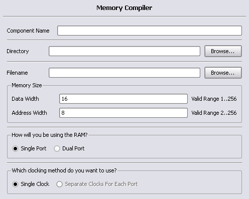
|
Component Name
|
Specifies the name of the component. This is the name that you instantiate in your design file to create an instance of the SYNCore RAM in your design. For example:
ram101 <ComponentName> (
.PortAClk(PortAClk)
, .PortAAddr(PortAAddr)
, .PortADataIn(PortADataIn)
, .PortAWriteEnable(PortAWriteEnable)
, .PortBDataIn(PortBDataIn)
, .PortBAddr(PortBAddr)
, .PortBWriteEnable(PortBWriteEnable)
, .PortADataOut(PortADataOut)
, .PortBDataOut(PortBDataOut)
);
Do not use spaces.
|
|
Directory
|
Specifies the directory where the generated files are stored. Do not use spaces. The following files are created:
- filelist.txt - lists files written out by SYNCore
- options.txt - lists the options selected in SYNCore
- readme.txt - contains a brief description and known issues
- syncore_ram.v - Verilog library file required to generate RAM model
- testbench.v - Verilog testbench file for testing the RAM model
- instantiation_file.vin - describes how to instantiate the wrapper file
- component.v - RAM model wrapper file generated by SYNCore
Note that running the Memory Compiler wizard in the same directory overwrites the existing files.
|
|
Filename
|
Specifies the name of the generated file containing the HDL description of the compiled RAM. Do not use spaces.
|
|
Data Width
|
Is the width of the data you need for the memory. The unit used is the number of bits.
|
|
Address Width
|
Is the address depth you need for the memory. The unit used is the number of bits.
|
|
Single Port
|
When enabled, generates a single-port RAM.
|
|
Dual Port
|
When enabled, generates a dual-port RAM.
|
|
Single Clock
|
When enabled, generates a RAM with a single clock for dual-port configurations.
|
|
Separate Clocks for Each Port
|
When enabled, generates separate clocks for each port in dual-port RAM configurations.
|
SYNCore RAM Parameters Pages 2 and 3
The port implementation parameters on pages 2 and 3 are identical, but page 2 applies to Port A (single- and dual-port configurations), and page 3 applies to Port B (dual-port configurations only). The following figure shows the parameters on page 2 for Port A.
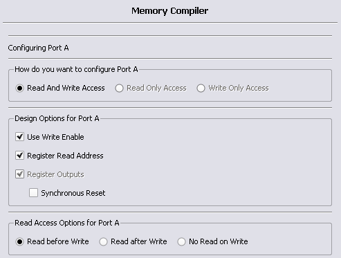
|
Read and Write Access
|
Specifies that the port can be accessed by both read and write operations
|
|
Read Only Access
|
Specifies that the port can only be accessed by read operations.
|
|
Write Only Access
|
Specifies that the port can only be accessed by write operations
|
|
Use Write Enable
|
Includes write-enable control. The RAM symbol on the left reflects the selections you make.
|
|
Register Read Address
|
Adds registers to the read address lines. The RAM symbol on the left reflects the selections you make.
|
|
Register Outputs
|
Adds registers to the write address lines when you specify separate read/write addressing. The register outputs are always enabled. The RAM symbol on the left reflects the selections you make.
|
|
Read before Write
|
Specifes that the read operation takes place before the write operation for port configurations with both read and write access (Read And Write Access is enabled). For a timing diagram, see Read Before Write.
|
|
Read after Write
|
Specifes that the read operation takes place after the write operation for port configurations with both read and write access (Read And Write Access is enabled). For a timing diagram, see Write Before Read.
|
|
No Read on Write
|
Specifes that no read operation takes place when there is a write operation for port configurations with both read and write access (Read And Write Access is enabled). For a timing diagram, see No Read on Write.
|
Single-Port Memories
For single-port RAM, you only need to configure Port A. The following figures show the read-write timing for single-port memories. See Specifying RAMs with SYNCore for a procedure.
Single-Port Read
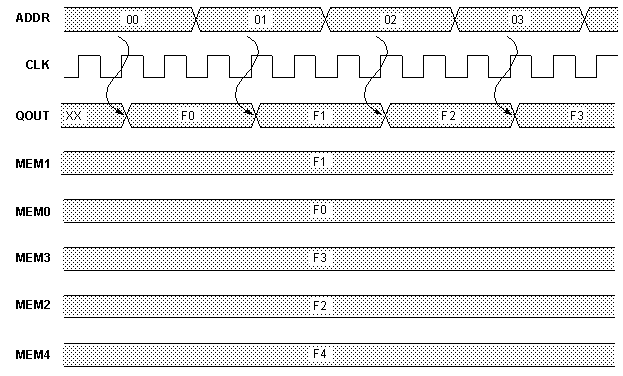
Single-Port Write
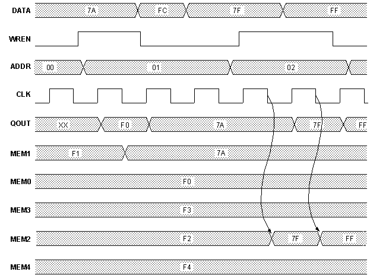
Dual-Port Memories
Dual-port memory includes the following common configurations:
- One read access and one write access
- Two read accesses and one write access
- Two read accesses and two write accesses
The following diagrams show the read-write timing for dual-port memories.
Dual-Port Single Read
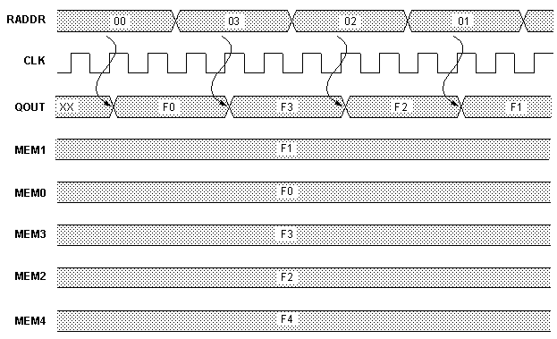
Dual-Port Single Write
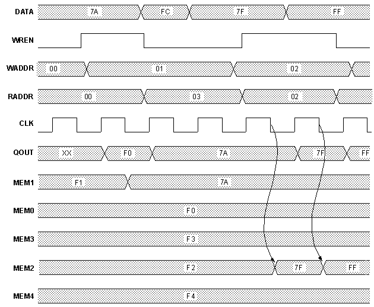
Dual-Port Read
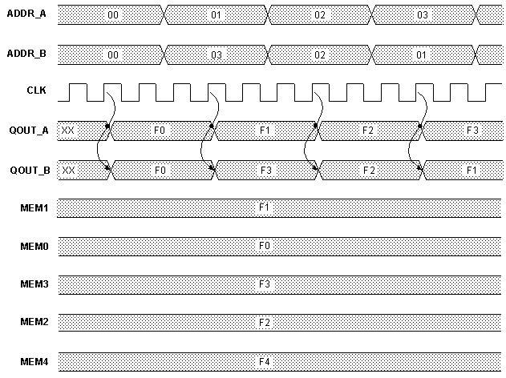
Dual-Port Write
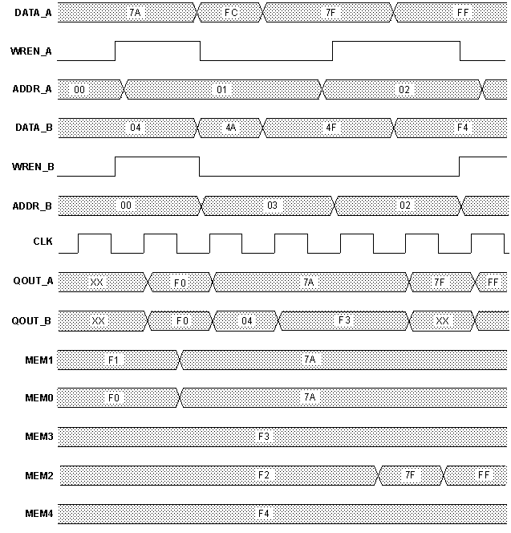
Read/Write Timing Sequences
The waveforms in this section describe the behavior of the RAM when both read and write are enabled and the address is the same. The waveforms show the behavior when each of the read-write sequences is enabled. The waveforms are merged with the simple waveforms shown in the previous sections. See the following:
Read Before Write
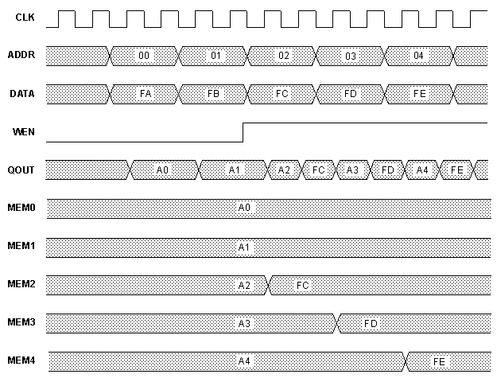
Write Before Read
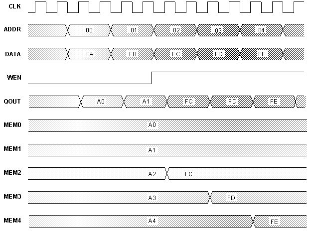
No Read on Write
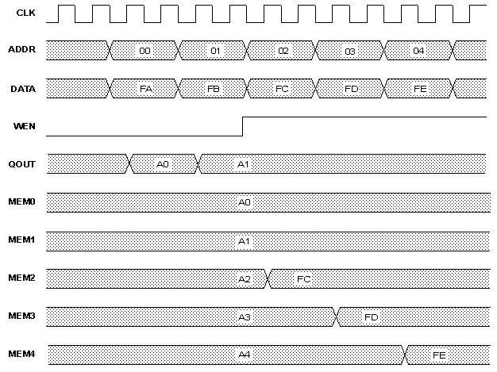
Copyright © 2007 Synplicity, Inc. All rights reserved.